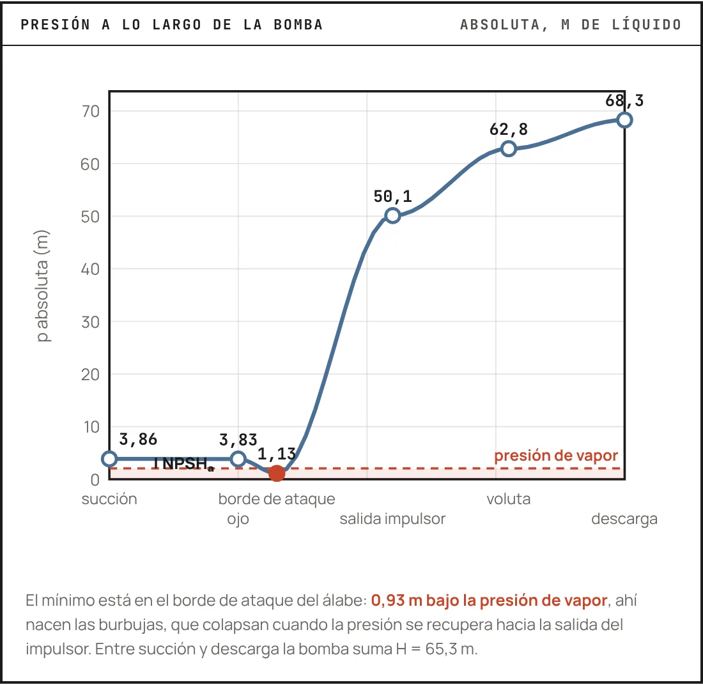
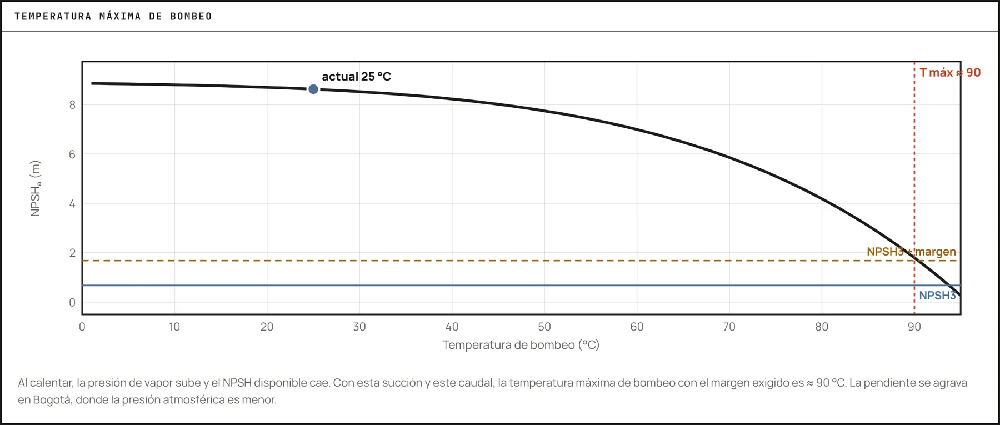
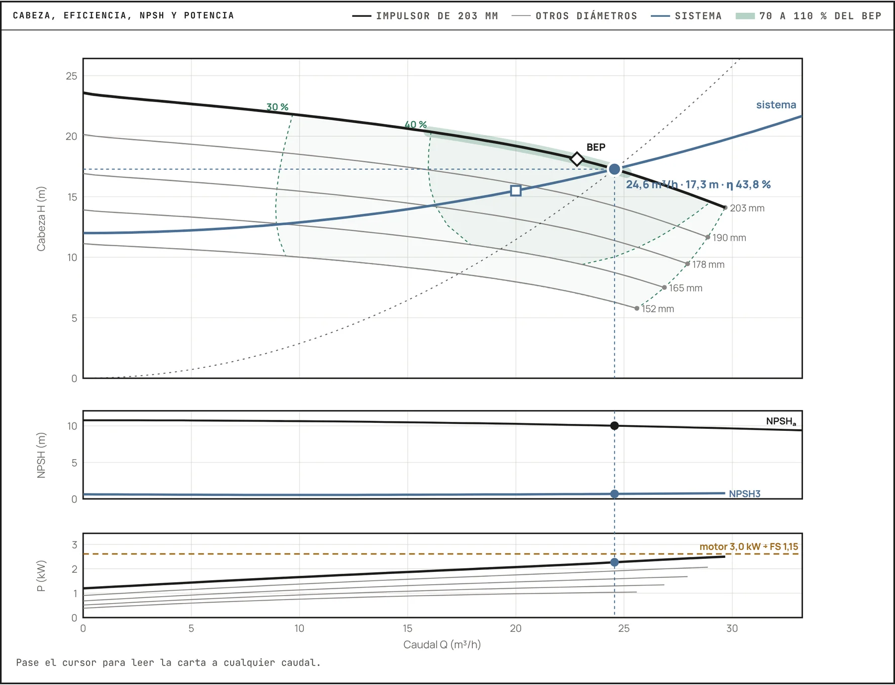
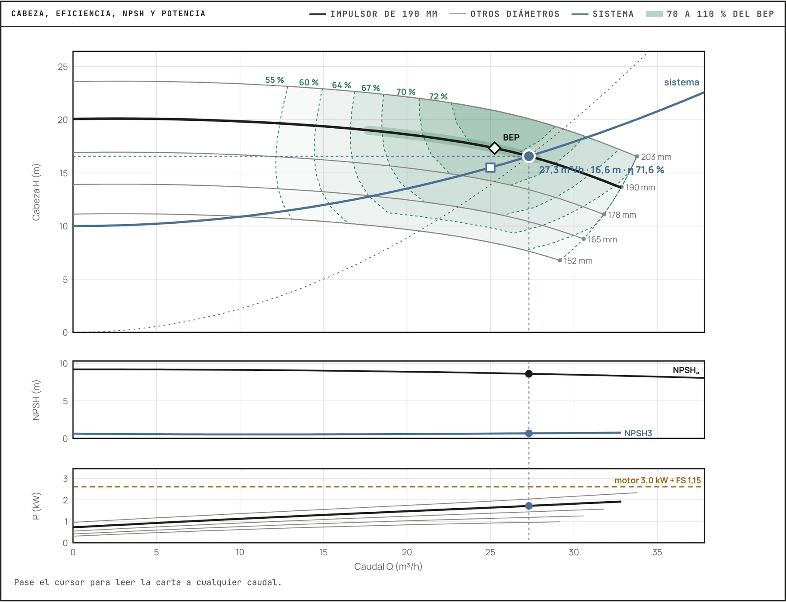
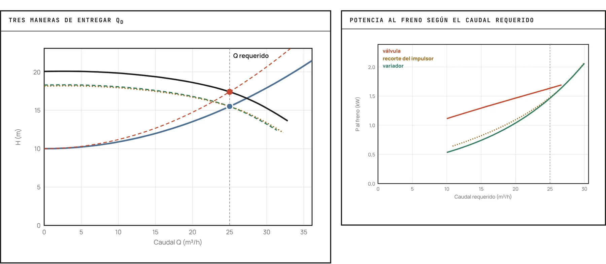

Bombas industriales
El equipo que le entrega energía al fluido. Tipos de bombas, curvas, punto de operación, NPSH, líquidos calientes y viscosos, potencia y una selección de catálogo paso a paso.
Esta lectura continúa la Lectura 05, Transporte de fluidos. Allí calculó las pérdidas de una línea y la cabeza que el sistema le pide a una bomba; aquí llega el equipo que aporta esa energía. Verá las grandes familias de bombas, cómo se leen sus curvas, dónde trabaja una bomba dentro de un sistema, qué es la cavitación y cómo se evita con el NPSH, qué cambia cuando el líquido llega caliente o es viscoso, y cómo se escoge una bomba de catálogo con su motor.
- Distinguir una bomba centrífuga de una de desplazamiento positivo y escoger la familia según caudal, cabeza, viscosidad y sólidos
- Leer una carta de catálogo: cabeza, eficiencia, potencia y NPSH requerido contra el caudal
- Construir la curva del sistema y hallar el punto de operación, con la ventana de 70-110 % del BEP
- Calcular el NPSH disponible y compararlo con el NPSH3 de la bomba con un margen justificado
- Explicar por qué un líquido caliente cerca de su punto de burbuja deja casi solo la altura estática como NPSH, y qué hacer al respecto
- Corregir la curva de agua por viscosidad con ANSI/HI 9.6.7 y reconocer cuándo conviene una bomba de desplazamiento positivo
- Calcular las potencias hidráulica, al freno y eléctrica, y escoger el motor

Léala con el Explorador de bombas centrífugas abierto. Varios ejemplos de aquí son casos de su pestaña Configuraciones, con los mismos números, y las figuras 3 a 8 salen de él. El Taller 4 aplica todo esto a un trasiego entre dos tanques con tres bombas de catálogo. Los servicios de planta que mueven estas bombas (vapor, condensado, agua de enfriamiento) son el tema de la Lectura 07.
1. El corazón del sistema de transporte
Las bombas son dispositivos mecánicos que transfieren energía a un fluido para aumentar su presión y/o producir flujo. Son indispensables en la gran mayoría de procesos industriales: desde el suministro de agua hasta el bombeo de productos químicos complejos o hidrocarburos a través de extensos ductos.
Un sistema de transporte de líquidos sin la bomba correcta es como un cuerpo sin corazón: la tubería puede ser perfecta, pero si no hay quien empuje el fluido, no pasa nada. La elección de la bomba, y de su punto de operación, determina la confiabilidad, el consumo energético y, en última instancia, el costo del proceso.
2. Tipos principales de bombas
La selección del tipo de bomba adecuado es una decisión de ingeniería fundamental que depende de múltiples factores: características del fluido (viscosidad, temperatura, sólidos en suspensión, corrosividad), caudal requerido, cabeza a desarrollar, eficiencia deseada y consideraciones económicas. Las dos grandes familias son las cinéticas (centrífugas) y las de desplazamiento positivo (DP).
Bombas centrífugas
Utilizan un elemento rotatorio llamado impulsor (o rodete), provisto de álabes, que gira a alta velocidad dentro de una carcasa estacionaria (voluta o difusor). El fluido entra axialmente al ojo del impulsor, es acelerado radialmente por la fuerza centrífuga, y esa energía cinética se convierte parcialmente en energía de presión en la voluta, una cámara con forma espiral que desacelera el flujo, antes de la descarga.
Bombas de desplazamiento positivo (DP)
Operan atrapando un volumen fijo de líquido en una cavidad mecánica y forzándolo (desplazándolo) hacia la tubería de descarga. A diferencia de las centrífugas, el caudal es casi directamente proporcional a la velocidad de operación (rpm) e idealmente independiente de la presión de descarga, dentro de los límites mecánicos de la bomba.
Se subdividen en dos familias:
- Reciprocantes: un elemento se mueve alternativamente (vaivén) dentro de una cámara: pistón, émbolo o diafragma.
- Rotatorias: elementos rotatorios forman sellos móviles con la carcasa para atrapar y mover el fluido: tornillos, engranajes, lóbulos, paletas.
Explore cada tipo en el visor interactivo:
- Capaces de generar presiones muy altas.
- Adecuadas para fluidos de alta viscosidad.
- Algunos tipos manejan fluidos con sólidos en suspensión o sensibles al cizallamiento.
- Caudal relativamente constante incluso con variaciones de presión.
- Son autocebantes.
Aplicaciones típicas: dosificación precisa de químicos, lodos, fluidos muy viscosos (aceites pesados, polímeros, melazas, pastas alimenticias), hidráulica de alta presión y muestreo.
Las bombas de desplazamiento positivo seguirán intentando desplazar el fluido aunque la descarga se bloquee. Esto puede romper la tubería, los sellos o la propia bomba. Toda instalación con bomba DP requiere una válvula de alivio de presión aguas arriba del primer punto de cierre, dimensionada para el caudal y la presión máxima que la bomba pueda generar.
¿Centrífuga o desplazamiento positivo?
La elección depende del cruce entre el punto de operación (Q, H), la viscosidad del fluido y restricciones del proceso (sólidos, tolerancia a pulsación). El siguiente selector permite explorar visualmente cómo se acomodan las distintas familias en el plano Q-H:
Selector visual de bomba
Mueva los controles para ver qué familias de bomba caben en su punto de operación. El rectángulo de cada familia es su rango típico (orientativo).
Casos típicos
Los rangos son orientativos: cada fabricante publica el mapa exacto de sus modelos. La decisión final también pondera costo, mantenimiento, seguridad y disponibilidad de repuestos.
Para fijar la comparación rápido, esta es la versión tabular:
| Criterio | Centrífuga | Desplazamiento positivo |
|---|---|---|
| Caudal | Alto (decenas a miles de m³/h) | Bajo a moderado, muy controlable |
| Presión / cabeza | Moderada (típicamente < 100-200 m) | Muy alta posible (> 1000 bar) |
| Viscosidad | Baja a media (degrada con μ alta) | Maneja viscosidades muy altas |
| Pulsación | Flujo suave | Pulsante (mitigable con varios cilindros) |
| Autocebado | No (requiere cebado) | Sí |
| Costo / mantenimiento | Más bajo | Mayor (más componentes móviles) |
3. Curvas características y punto de operación
La cabeza (head): la moneda común de las bombas
El rendimiento de una bomba no se expresa como un incremento de presión Δ P sino como una cabeza o altura H (en metros de columna de líquido). La razón es práctica: la cabeza que una bomba centrífuga desarrolla es independiente de la densidad del fluido (depende de la geometría del impulsor y de su velocidad de giro), mientras que el incremento de presión sí depende de ρ. Ambas magnitudes se relacionan por:
donde Δ P es el incremento de presión entre succión y descarga, ρ la densidad del líquido y g la aceleración de la gravedad. Así, una misma bomba que entrega H = 35 m de cabeza producirá un Δ P menor si bombea gasolina (ρ ≈ 730 kg/m³) que si bombea agua (ρ = 1000 kg/m³). Por eso los catálogos reportan siempre H en metros: es la moneda común que permite comparar bombas con independencia del fluido.
Las curvas características (o curvas de rendimiento) son gráficos proporcionados por el fabricante que describen el comportamiento de una bomba centrífuga específica a una velocidad de rotación dada y para un fluido de referencia (usualmente agua). Son fundamentales para la selección y predicción del comportamiento de la bomba en un sistema.
- Cabeza vs. caudal (H vs. Q): es la curva principal. Muestra la cabeza total que la bomba puede desarrollar (m de columna de líquido) en función del caudal. Generalmente la cabeza disminuye al aumentar Q. El punto Q = 0 se conoce como «cabeza de cierre» (shut-off head).
- Eficiencia vs. caudal (η vs. Q): la eficiencia es cero a Q=0 y a Q_máx, y alcanza un máximo en el BEP (Best Efficiency Point). Es deseable operar tan cerca del BEP como sea posible.
- Potencia al freno vs. caudal (BHP vs. Q): potencia que el motor debe entregar al eje de la bomba para cada caudal.
- NPSH requerido vs. caudal (NPSH_r vs. Q): cabeza mínima de succión que la bomba necesita para operar sin cavitación. Suele aumentar con Q.
El punto de operación de una bomba dentro de un sistema se determina gráficamente por la intersección de la curva H-Q de la bomba con la curva del sistema. La curva del sistema representa la cabeza total que la bomba debe vencer (cabeza estática neta + pérdidas por fricción h_L) para cada caudal.
Curvas características de una bomba centrífuga
El punto de operación es la intersección de la curva H-Q con la curva del sistema. Lo deseable es que coincida (o esté cerca) del BEP.

Una bomba sobredimensionada operará lejos del BEP, generalmente a la izquierda, con baja eficiencia, recirculación interna y vibraciones. Una subdimensionada operará a la derecha del BEP, con NPSHr alto y riesgo de cavitación. La regla práctica es seleccionar la bomba de modo que el punto de operación caiga dentro de la ventana de 70-110 % del caudal del BEP.
La curva del sistema: lo que la instalación le pide a la bomba
La curva del sistema sale del mismo balance de energía mecánica de la Lectura 05, escrito entre la superficie del tanque de succión (1) y la del tanque de descarga (2):
Los tres primeros términos no dependen del caudal (con tanques grandes, el de las velocidades es despreciable) y forman la cabeza estática H0. Las pérdidas, en régimen turbulento, crecen casi con el cuadrado del caudal:
Se dice «casi» porque el factor de fricción f baja un poco cuando sube el número de Reynolds: para una curva precisa se recalcula f en cada punto, como pide el Taller 4. La curva del sistema es de la instalación y no sabe qué bomba se le va a poner; la curva H-Q es de la bomba y no sabe en qué instalación va a trabajar. El punto de operación es su cruce, y la bomba no tiene otra opción que trabajar allí.
Cerrar una válvula de la descarga sube K_sis: la curva del sistema se empina y el punto se corre a la izquierda, con la cabeza que sobra quemada en la válvula. Cambiar la velocidad con un variador mueve la curva de la bomba según las leyes de afinidad (sección 6), y el punto baja por la curva del sistema sin quemar nada. La presentación de la sesión lo muestra paso a paso con una animación, y la pestaña Regulación del explorador compara las dos con el recorte del impulsor.
4. Cavitación y NPSH
La cavitación es la formación y colapso implosivo de burbujas de vapor dentro de una bomba. Ocurre cuando la presión local del líquido en algún punto, típicamente a la entrada del impulsor, cae por debajo de la presión de vapor del líquido a la temperatura de bombeo.
Efectos de la cavitación
- Ruido característico (como si la bomba moviera grava) y vibraciones intensas.
- Daño erosivo a los componentes, especialmente el impulsor.
- Reducción de la cabeza desarrollada y del caudal.
- Disminución de la eficiencia.
- En casos severos, falla catastrófica de la bomba.
Simulación numérica del colapso de una burbuja cerca de una superficie sólida. El colapso asimétrico genera un chorro y ondas de choque que erosionan el metal (Beig & Johnson).
El daño en bombas reales se concentra en los bordes de ataque de los álabes, donde la presión es mínima. Cada burbuja que colapsa contra el metal lanza un microchorro de líquido de cientos de metros por segundo, y una onda de presión, que arrancan pequeñas cantidades de material. Sumado en miles de millones de eventos por hora, el impulsor se perfora, a veces en cuestión de semanas.
Para prevenirla, la ingeniería usa el concepto de NPSH (Net Positive Suction Head, carga neta positiva en la succión).
NPSH disponible (NPSHa)
Es una característica del sistema de succión e indica la energía absoluta (expresada como cabeza de líquido) en la brida de succión de la bomba por encima de la presión de vapor del líquido:
O, en términos prácticos del sistema (tanque de succión):
- P_abs,succión: presión absoluta en la brida de succión de la bomba.
- P_tanque: presión absoluta sobre la superficie del líquido en el tanque de succión.
- (z_tanque - z_bomba): diferencia de elevación, positiva si el nivel del líquido está por encima de la bomba.
- h_L,succión: pérdidas totales de cabeza en la tubería de succión.
- P_vap: presión de vapor del líquido a la temperatura de bombeo.
- ρ: densidad del líquido. g: aceleración de la gravedad.

NPSH requerido (NPSHr)
Es una característica intrínseca de la bomba, determinada experimentalmente por el fabricante y reportada en sus curvas. Representa la cabeza mínima necesaria en la brida de succión para superar las pérdidas internas de la bomba y evitar que la presión en el ojo del impulsor caiga por debajo de la presión de vapor. Suele aumentar con el caudal.
Conviene saber cómo se mide. El fabricante ensaya la bomba con agua fría, a caudal y velocidad constantes, y baja la presión de succión hasta que la cabeza cae un 3 % por la cavitación. Ese NPSH es el NPSH3, y es lo que el catálogo publica como NPSH requerido; la guía ANSI/HI 9.6.1-2024 pide que el NPSHR publicado nunca sea menor que el NPSH3 ensayado. Note lo que implica: en el NPSH3 la bomba ya cavita, tanto que pierde cabeza. La caída empieza antes del 3 %, y las primeras burbujas, que todavía no se notan en la cabeza, aparecen con un NPSH bastante mayor que el NPSH3 (el explorador del curso toma 1,3 veces el NPSH3 como inicio). Por eso el margen no es un lujo.
Condición para evitar cavitación
El NPSH disponible debe ser mayor que el requerido, con un margen de seguridad razonable. La guía ANSI/HI 9.6.1 recomienda márgenes que dependen del servicio y del tamaño de la bomba; como regla práctica de diseño, al menos 0,5-1 m o 10-25 % por encima del NPSHr, y más en bombas grandes, rápidas o con líquidos calientes:

Calculadora interactiva de NPSH disponible
Modelo simplificado con ρ = 1000 kg/m³ y g = 9,81 m/s². En Bogotá la presión atmosférica es de unos 74 kPa. Para fluidos distintos al agua, ajuste ρ y P_vap a la temperatura de operación.
- Subir el tanque de succión (aumenta z_tanque).
- Bajar la bomba respecto al nivel del líquido.
- Reducir pérdidas en la línea de succión: tuberías más cortas y de mayor diámetro, menos accesorios, menos curvas.
- Enfriar el líquido para disminuir P_vap.
- Presurizar el tanque (cuando es viable, con gas inerte por ejemplo).
5. Líquidos calientes y cerca de su punto de burbuja
Muchos líquidos de proceso llegan a la bomba justo en su punto de burbuja, o muy cerca: el condensado que drena de un condensador o de una trampa de vapor a su recibidor, el agua de alimentación de una caldera que sale del desaireador, los fondos de una columna de destilación, la fase acuosa que sale caliente de un decantador después de un condensador, el hidrolato de una destilación con vapor. En todos ellos el líquido del recipiente está en equilibrio con su propio vapor, o casi.
Si en la ecuación del NPSH disponible la presión del recipiente es la de vapor del líquido, el término de presión desaparece:
Para un líquido saturado no importa si el recipiente está a 0,5 bar o a 10 bar: la presión de vapor sube con él. Lo único que queda es la altura del líquido sobre la bomba menos las pérdidas de la succión. Por eso los desaireadores que alimentan las bombas de agua de caldera se instalan en lo alto de la planta, varios metros por encima de las bombas, y por eso los fondos de una columna se bombean desde un sumidero elevado.
Un recipiente abierto a la atmósfera tampoco escapa. Su líquido no puede estar más caliente que la temperatura de saturación a la presión local: lo que llega más caliente se revaporiza en parte (el vapor flash) y el resto queda saturado. En Bogotá, con unos 73,7 kPa de presión atmosférica, el agua hierve a 91,3 °C; un condensado que llega a un recibidor venteado a 95 °C se queda a 91,3 °C y con NPSH disponible igual a la altura menos las pérdidas.
El término que se resta es la presión de burbuja de la mezcla a la temperatura de bombeo, no la presión de vapor de su componente principal. Un condensado acuoso que lleva disueltos compuestos orgánicos volátiles tiene una presión de burbuja algo mayor que la del agua pura, y puede traer gases disueltos que salen en la succión. Y si arrastra gotas de una segunda fase orgánica inmiscible, la presión de burbuja es la suma de las dos presiones de vapor puras: la mezcla hierve por debajo del punto de ebullición del agua, que es el principio de la destilación con vapor de la Lectura 04. Lo prudente es tratar ese líquido como saturado a la temperatura con que sale.
Un recibidor de condensado venteado a la atmósfera, en Bogotá (P = 73,7 kPa), recoge agua a 90 °C (P_vap = 70,2 kPa, ρ = 965,3 kg/m³). Su nivel mínimo queda 1,5 m sobre el eje de la bomba y la succión pierde 0,4 m al caudal de diseño. La bomba escogida pide un NPSH3 de 2,0 m en ese caudal.
- Término de presión: (73,7 − 70,2)·10³/(965,3 · 9,81) = 0,37 m.
- NPSH disponible: 0,37 + 1,5 − 0,4 = 1,47 m, menos que los 2,0 m que pide la bomba. La bomba cavita, y lo hará peor cuando el condensado llegue a 91,3 °C y el término de presión se vuelva cero.
- Subir el recibidor. Para una razón NPSHa/NPSH3 de 1,3 hacen falta 2,6 m de NPSH, es decir z ≥ 2,6 − 0,37 + 0,4 = 2,63 m. Con el recibidor a 3,0 m, el NPSH disponible es 2,97 m (razón 1,49) y sigue siendo 2,6 m si el condensado llega saturado.
- Subenfriar. Si el condensado pasa antes por un enfriador y llega a 70 °C (P_vap = 31,2 kPa, ρ = 977,8 kg/m³), el término de presión sube a 4,43 m y el NPSH disponible a 5,53 m sin mover el recibidor.
Los números son de un caso supuesto, con propiedades del agua de tablas de vapor.

NPSH disponible de agua caliente en un recipiente abierto
Presión atmosférica estándar según la altitud, presión de vapor de Antoine y densidad de Thiesen, las mismas del explorador; la presión de vapor de Antoine difiere en centésimas de kPa de las tablas de vapor del ejemplo. Por encima de la ebullición local el agua de un recipiente abierto no existe como líquido: la calculadora la deja saturada.
Lo que se hace en la práctica
- Altura estática. Subir el recipiente o bajar la bomba: fosos, o bombas verticales de tipo barril, en las que el impulsor de la primera etapa queda varios metros por debajo del piso.
- Una succión que no estorbe. Corta, de diámetro generoso, sin filtros finos (o con un filtro de baja pérdida y su manómetro diferencial), con una reducción excéntrica con el lado plano arriba y sin bolsas donde se acumule vapor.
- Subenfriar. Un intercambiador pequeño antes de la bomba, o enfriar el recipiente, baja la presión de vapor; cerca de la ebullición, cada grado cuenta mucho.
- Una bomba de bajo NPSH3. Menor velocidad (el NPSH3 crece con N²), ojo de impulsor grande, un inductor axial delante del impulsor o una primera etapa de baja cabeza que alimente a la principal.
- Venteo y flujo mínimo. Una línea de equilibrio de la carcasa al espacio de vapor del recipiente saca el vapor que se forma al arrancar. Y a caudal muy bajo el líquido se calienta dentro de la bomba hasta vaporizarse: las bombas de condensado y de agua de caldera llevan una recirculación de flujo mínimo de vuelta al recipiente.
6. Potencia de bombeo y leyes de afinidad
Potencia de bombeo
Calculadora de potencia de bombeo
P_h = ρ g Q H, BHP = P_h / η_bomba, P_eléctrica = BHP / η_motor. El motor se escoge por la potencia al freno con un margen de 1,15-1,25, no por la eléctrica.
Bomba que mueve agua a Q = 50 m³/h con H = 35 m, η_bomba = 0,70, η_motor = 0,92:
- P_h = 1000 · 9,81 · (50/3600) · 35 ≈ 4,77 kW
- BHP = 4,77 / 0,70 ≈ 6,81 kW
- P_eléctrica = 6,81 / 0,92 ≈ 7,40 kW
- Con f_s = 1,20 sobre la potencia al freno del punto: P_nominal ≥ 1,20 × 6,81 = 8,17 kW ⇒ el tamaño normalizado siguiente es el motor de 11 kW (15 HP). Si la curva publicada sigue subiendo a la derecha del punto, se repite la cuenta con la potencia al final de la curva.
Leyes de afinidad
Las leyes de afinidad (o leyes de semejanza) predicen cómo cambian el caudal, la cabeza y la potencia de una bomba centrífuga cuando se modifica su velocidad de giro N (rpm), típicamente con un variador de frecuencia (VFD), o el diámetro del impulsor D. Son la base para reescalar las curvas características a una velocidad distinta de la nominal.
Para una bomba dada (mismo impulsor) que pasa de la velocidad N_1 a N_2:
La dependencia cúbica de la potencia con la velocidad explica por qué reducir la velocidad con un VFD es una estrategia de ahorro energético extraordinariamente eficaz: bajar la velocidad apenas un 20 % (a N_2/N_1 = 0,8) reduce la potencia consumida a 0,8^3 ≈ 0,51, es decir, ¡casi a la mitad! Por eso estrangular con una válvula (que disipa energía como pérdida) es mucho menos eficiente que ajustar la velocidad cuando la demanda de caudal disminuye.
Son exactas solo si la eficiencia se mantiene constante entre los dos estados (algo razonable para cambios moderados de velocidad). El NPSH_r escala aproximadamente como N^2, de modo que subir la velocidad aumenta el riesgo de cavitación. Para cambios grandes de velocidad o de diámetro del impulsor, conviene verificar con curvas del fabricante.
Para una misma velocidad, al recortar (tornear) el impulsor de D_1 a D_2 aplican relaciones análogas: Q ∝ D, H ∝ D^2 y P ∝ D^3. Es la forma habitual en que el fabricante ofrece varios «tamaños» de cabeza para una misma carcasa.
7. Líquidos viscosos: corregir la curva o cambiar de bomba
Las cartas de catálogo están medidas con agua. Con un líquido más viscoso crecen la fricción del disco del impulsor contra el líquido y las pérdidas en los canales: la bomba entrega menos caudal y menos cabeza, y pide más potencia. Si la viscosidad es moderada, la curva de agua se corrige; si es alta, la centrífuga deja de ser la bomba adecuada.
La corrección de ANSI/HI 9.6.7
El método del Hydraulic Institute, que reemplazó a los nomogramas que se usaron por décadas, parte del punto de mejor eficiencia con agua (Q_BEP-W, H_BEP-W), de la velocidad N y de la viscosidad cinemática ν del líquido, y calcula un parámetro B:
con ν en cSt, la cabeza en m por etapa, el caudal en m³/h y N en rpm; con caudal en galones por minuto y cabeza en pies, la constante es 26,6. Si B ≤ 1, la curva de agua vale sin corregir. Entre 1 y 40 se calculan tres factores:
y cada punto de la curva de agua se traslada: Q_vis = C_Q Q_W, H_vis = C_H H_W y η_vis = C_η η_W. En el BEP, C_H = C_Q. La potencia se recalcula con la densidad del líquido, P = ρ g Q_vis H_vis / η_vis, y el NPSH3 se toma igual al del agua en el caudal equivalente Q_W = Q_vis/C_Q. Por encima de B = 40 el método no aplica: la pérdida de eficiencia es tan grande que se busca otra bomba. La norma cubre bombas radiales con líquidos newtonianos entre 1 y 4000 cSt, con datos experimentales hasta 3000 cSt.
Una bomba 2×3-8 a 1750 rpm, con el impulsor máximo de 203 mm, tiene con agua su BEP en 26,0 m³/h, 20,6 m y 73,5 % de eficiencia. Se quiere usar para un aceite mineral ISO VG 32 a 20 °C, con ν = 86 cSt y ρ = 857 kg/m³ (es el caso «Bombeo de aceite viscoso» del explorador).
- B = 16,5 × 86^0,5 × 20,6^0,0625 / (26,0^0,375 × 1750^0,25) = 8,44
- C_Q = 0,879 y C_η = 0,601.
- BEP con el aceite: 0,879 × 26,0 = 22,8 m³/h, 0,879 × 20,6 = 18,1 m y 0,601 × 73,5 = 44,2 %.
- Potencia al freno en el BEP: con agua, 1,98 kW; con el aceite, 2,18 kW.
La bomba mueve 12 % menos caudal con 12 % menos cabeza y pide 10 % más potencia, aunque el aceite es 14 % más liviano que el agua. Si el motor se hubiera escogido con la curva de agua, quedaría justo.

Bombas de desplazamiento positivo para líquidos viscosos
Con un líquido viscoso, una bomba de desplazamiento positivo hace lo contrario que una centrífuga: mejora. Cada vuelta desplaza un volumen fijo, V_d, y lo que se pierde es lo que se devuelve por las holguras de la descarga a la succión, el deslizamiento, que es menor cuanto más viscoso es el líquido:
Las familias de uso más común con líquidos viscosos son las rotatorias del visor de la sección 2:
- Engranajes externos e internos. Compactas y de presión alta; las de engranaje interno trabajan bien con aceites, jarabes, resinas y chocolate.
- Lóbulos. Holguras amplias y poco cizallamiento: son las de la industria de alimentos para productos viscosos con trozos, y se limpian en el sitio.
- Tornillos y cavidad progresiva. Flujo casi sin pulsación. La de cavidad progresiva (un rotor helicoidal dentro de un estator de elastómero) maneja pastas, lodos y líquidos con sólidos abrasivos.
Tres cosas cambian respecto a una centrífuga. Primera, la bomba se escoge lenta: los fabricantes bajan la velocidad máxima a medida que sube la viscosidad, para que el líquido alcance a llenar las cavidades. Segunda, en lugar de NPSH se habla de NPIP, la presión neta de entrada (presión absoluta en la brida de succión menos la presión de vapor, en kPa o bar); con un líquido viscoso las pérdidas de la succión, ahora en régimen laminar, pueden dominar, y la succión se hace más grande que la descarga. Tercera, el caudal se regula con la velocidad o con un retorno a la succión, nunca cerrando la descarga, y la válvula de alivio de la sección 2 es obligatoria.
Una bomba de engranajes internos de 0,35 L por vuelta gira a 400 rpm con una eficiencia volumétrica de 0,95: entrega Q = 0,35 × 400 × 0,95 = 133 L/min, es decir 7,98 m³/h. Contra 6 bar de diferencia de presión y con una eficiencia total de 0,70, pide P = (7,98/3600) × 6·10⁵ / 0,70 = 1,90 kW. Los datos son supuestos, del orden de los de un catálogo.
No hay una frontera única. La pista la dan los números: cuando el factor C_η cae por debajo de 0,7 (más o menos con B > 6), la potencia extra de una centrífuga empieza a pesar y vale la pena cotizar una de desplazamiento positivo; con B > 40 la decisión ya está tomada. El selector de la sección 2 muestra cómo se cierran las familias a medida que sube la viscosidad.
8. Cómo se selecciona una bomba, paso a paso
Con todo lo anterior, la selección de una bomba centrífuga sigue un orden. Cada paso usa una sección de esta lectura o de la Lectura 05:
- Defina el servicio. Fluido, temperatura (la máxima, no la normal), densidad, viscosidad, presión de vapor o de burbuja, sólidos y corrosividad. Caudal normal, mínimo y máximo, con un margen de diseño sobre el normal (a menudo 10-20 %).
- Construya la curva del sistema (sección 3 y Lectura 05) en los casos extremos: nivel bajo y alto, filtro limpio y sucio, presiones de los recipientes.
- Calcule el NPSH disponible en el caso crítico (secciones 4 y 5): caudal máximo, nivel mínimo, temperatura máxima, filtro sucio y presión mínima del recipiente de succión.
- Escoja la familia con el selector de la sección 2 y la viscosidad (sección 7).
- Escoja el tamaño en la carta de cobertura del fabricante, la que reúne todos sus tamaños en el plano caudal-cabeza, y luego el diámetro del impulsor en la carta de ese tamaño.
- Verifique el punto de operación: que exista, que caiga en la ventana de 70-110 % del BEP, que la razón NPSHa/NPSH3 tenga margen y que la curva suba hasta el cierre (curva estable).
- Corrija por viscosidad y por densidad (sección 7).
- Potencia y motor (sección 6): potencia al freno en el punto y máxima en la curva publicada, y el motor normalizado con su margen.
- Regulación: cómo va a variar el caudal (válvula, variador, recirculación) y qué pasa en los extremos.
- Materiales, sello y hoja de datos, como en la presentación de la sesión.
Se necesita mover 25 m³/h de agua a 25 °C, en Bogotá, desde un tanque abierto cuyo nivel queda 2 m sobre el eje de la bomba hasta un punto 12 m sobre el eje, también a la atmósfera. A 25 m³/h la succión pierde 0,5 m y la descarga 5,0 m. Es el caso base del explorador.
- Curva del sistema. H0 = 12 − 2 = 10 m, y K_sis = 5,5/25² = 0,0088, así que H_sis = 10 + 0,0088 Q²: 15,5 m a 25 m³/h.
- NPSH disponible a 25 m³/h. 7,54 + 2 − 0,5 − 0,32 = 8,7 m. Con agua fría, en esta succión sobra NPSH.
- Bomba candidata. Una carcasa 2×3-8 a 1750 rpm con impulsor de 190 mm, cuya curva con agua es la de la Tabla 1.
Tabla 1. Curva de la bomba candidata (2×3-8, 1750 rpm, impulsor de 190 mm, agua) y curva del sistema del ejemplo.
| Q (m³/h) | H bomba (m) | η (%) | NPSH3 (m) | H sistema (m) |
|---|---|---|---|---|
| 0 | 20,1 | 0 | 0,63 | 10,0 |
| 10 | 19,8 | 48 | 0,54 | 10,9 |
| 20 | 18,6 | 69 | 0,59 | 13,5 |
| 25 | 17,4 | 72 | 0,65 | 15,5 |
| 30 | 15,3 | 68 | 0,72 | 17,9 |
| 35 | 12,2 | 58 | 0,80 | 20,8 |
- Punto de operación. Las curvas se cruzan entre 25 y 30 m³/h; interpolando con más puntos queda en 27,3 m³/h y 16,6 m, con 71,6 % de eficiencia. El BEP de este impulsor está en 25,3 m³/h, así que el punto cae al 108 % del BEP, dentro de la ventana. La razón NPSHa/NPSH3 es 8,6/0,68 ≈ 13.
- Potencia. BHP = 997 × 9,81 × (27,3/3600) × 16,6 / 0,716 = 1,72 kW. Al final de la curva publicada (32,8 m³/h) la bomba pide 1,92 kW; con f_s = 1,15 son 2,20 kW, justo por encima del tamaño normalizado de 2,2 kW, así que el motor es de 3 kW. Con su eficiencia de 87,7 %, la potencia eléctrica en el punto es 1,96 kW.
- Regulación. La bomba entrega 27,3 m³/h con la válvula abierta, un 9 % más de lo pedido. Para dar justo 25 m³/h: estrangulando la válvula se queman 1,9 m y el eje pide 1,64 kW; con un variador al 95,5 % de la velocidad pide 1,46 kW; recortando el impulsor a 183 mm, 1,48 kW.


Note que el ejemplo no resuelve una planta: es un servicio sencillo para mostrar el orden. En el Taller 4 el mismo procedimiento se aplica con cartas reales de fabricante, y la pregunta incómoda es si alguna de las bombas sirve.
Más allá de la selección: los desafíos de operación
Operar bombas en la práctica es mucho más que aplicar las ecuaciones anteriores. Estos son los frentes que un ingeniero de procesos debe atender:
Selección adecuada
Escoger el tipo y tamaño de bomba correcto para la aplicación específica es fundamental para la eficiencia operativa y la vida útil del equipo.
Optimización energética
Operar cerca del BEP es clave para minimizar el consumo de energía, con impacto económico y ambiental significativo a lo largo de la vida útil de la planta.
Control del sistema
Estrategias como variadores de frecuencia (VFD), válvulas de control y operación en paralelo o serie permiten adaptar el rendimiento a las necesidades variables del proceso.
Prevención de cavitación
Diseño cuidadoso del sistema de succión: tuberías cortas y amplias, baja elevación de la bomba, NPSHa con margen razonable.
Mantenimiento y confiabilidad
Las bombas son equipos rotativos que requieren plan preventivo y predictivo: sellos, rodamientos, alineación, vibraciones y consumo de potencia.
Manejo de fluidos complejos
Desafíos adicionales con fluidos viscosos, corrosivos, con sólidos o a altas temperaturas, pueden cambiar por completo la familia de bomba elegida.
- En paralelo (dos bombas idénticas con succión y descarga comunes): se suman caudales a la misma cabeza. Útil cuando la demanda de Q es variable y se quiere apagar una bomba en horas de baja carga.
- En serie (descarga de una alimenta la succión de otra): se suman cabezas al mismo caudal. Útil cuando una sola bomba no llega a la presión requerida (por ejemplo, edificios altos, oleoductos).
9. Para cerrar
En la planta de aceite esencial hay bombas en varias estaciones: el agua del lavado, el hidrolato que sale del florentino, el aceite hacia la winterización y la rectificación, y el agua de enfriamiento del condensador. La Bitácora 2 (semana 7) le pide a su equipo:
- Escoger el tipo de bomba de cada servicio (centrífuga o de desplazamiento positivo) y justificarlo con el fluido y las condiciones de operación.
- Con la cabeza total de la Lectura 05, escoger una bomba de catálogo real, con su carta, y marcar el punto de operación, la eficiencia y el NPSH requerido en ese punto.
- Calcular el NPSH disponible y verificar que supere al requerido con margen. El hidrolato sale caliente, cerca de su saturación, y además a la presión de Bogotá: ahí aplica la sección 5.
- Corregir la curva si el líquido es más viscoso que el agua, como el aceite frío de la winterización (sección 7).
- Estimar la potencia al freno, escoger el motor normalizado y analizar la eficiencia.
El vapor vivo que pide el extractor y de dónde sale ese vapor van en la misma bitácora: los trata la Lectura 07.
Tres ideas para llevarse de esta lectura.
La primera: una bomba no decide su caudal. Lo decide el cruce de su curva con la del sistema, y por eso se dibujan las dos antes de escoger. La ventana de 70-110 % del BEP es la diferencia entre una bomba que dura años y una que vibra, recircula y gasta.
La segunda: el NPSH disponible es una propiedad de la instalación, y se gana o se pierde en la succión: altura, diámetro, accesorios y, sobre todo, temperatura. Con un líquido cerca de su punto de burbuja la presión del recipiente deja de ayudar y solo queda la altura; ese es el caso que más bombas daña en la práctica.
La tercera: las cartas de catálogo son de agua fría. Un líquido viscoso pide corregirlas con ANSI/HI 9.6.7 y, si la corrección es grande, cambiar de familia; y el motor se escoge por la potencia al freno máxima de la curva, no por la del punto.
Compruebe que puede responder estas preguntas sin volver al texto:
- ¿Por qué los catálogos expresan el rendimiento de una bomba centrífuga en metros de cabeza y no en presión?
- Si se cierra un poco la válvula de descarga, ¿qué curva cambia, la de la bomba o la del sistema, y hacia dónde se mueve el punto de operación?
- ¿Qué es el NPSH3 y por qué una bomba que opera con NPSHa = NPSH3 ya está cavitando?
- ¿Por qué el NPSH disponible de un condensado saturado no depende de la presión del recipiente, y qué dos cosas lo suben?
- ¿Por qué el motor se dimensiona con la potencia al freno y no con la eléctrica, y en qué punto de la curva se lee?
- Con un líquido más viscoso, ¿qué le pasa a la eficiencia de una centrífuga y qué le pasa a la eficiencia volumétrica de una bomba de engranajes?
10. Bibliografía recomendada
- McCabe, W. L., Smith, J. C., & Harriott, P. (2005). Unit Operations of Chemical Engineering (7th ed.). McGraw-Hill. (Capítulo 8: Transportation and Metering of Fluids).
- Green, D. W., & Southard, M. Z. (Eds.). (2019). Perry's Chemical Engineers' Handbook (9th ed.). McGraw-Hill. (Sección 10: Transport and Storage of Fluids).
- Karassik, I. J., Messina, J. P., Cooper, P., & Heald, C. C. (2008). Pump Handbook (4th ed.). McGraw-Hill. La referencia más completa y detallada sobre bombas.
- Lobanoff, V. S., & Ross, R. R. (1992). Centrifugal Pumps: Design and Application (2nd ed.). Gulf Professional Publishing.
- Hydraulic Institute. (2021). ANSI/HI 9.6.7-2021: Rotodynamic Pumps Guideline for Effects of Liquid Viscosity on Performance. Reemplaza la edición de 2010, citada antes con su título anterior, Effects of Liquid Viscosity on Rotodynamic (Centrifugal and Vertical) Pump Performance.
- Hydraulic Institute. (2024). ANSI/HI 9.6.1-2024: Rotodynamic Pumps Guideline for NPSH Margin.
Los libros y las normas no se publican en el aula: búsquelos en la Biblioteca.